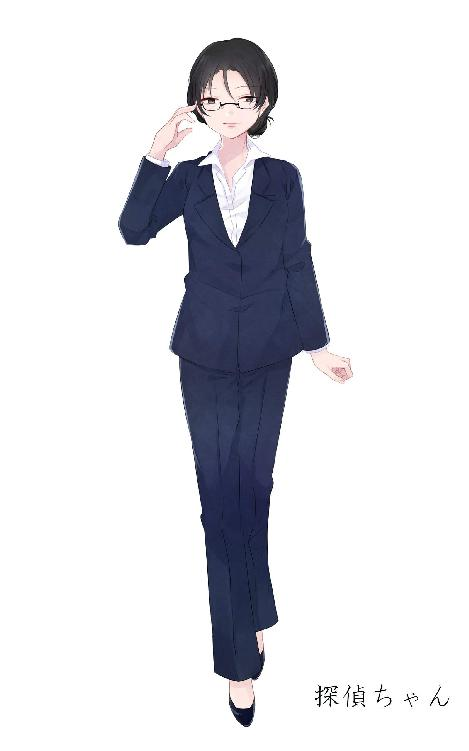

| ドクターアルファのティータイム EP4～嘘と冷たいアイスティー～ | |
| 白色黒蛇 | |
| (2018) | |
ドクターアルファのティータイム EP4～嘘と冷たいアイスティー～
白色黒蛇
天田アオイの手記――１
アタシの研究が認められた。民間企業３社から直接、
「あなたの研究を支援させていただきたいです（和訳）」
「素晴らしい技術だ。我々に何かお手伝いできることはありませんか？（和訳）」
と声をかけて貰えた。嬉しい話だ。資金が増えればやれることも増える。
全くもって順風満帆、うまくいきすぎて怖いくらいだ。
更にさらにアメリカの国家研究機関からもメールが届いているじゃないか⁉
全くもって予想外！ 舞い上がるほど嬉しく思うよ。
これは更に頑張らねばならないだろう。生体復元の研究、完成まであと少しだ。
ドクターアルファと探偵ちゃん――１

「天田アオイ」
今現在最もドクターアルファに近いとされている人物。記憶を無くしたドクターアルファの前の名前なのか、それともかつての協力者か。
しかし、この名前が分かってしまえばいくらか調べやすくなるというものだ。
私は日本に帰国した......途端にドクターアルファから電話がかかってきた。
『おかえり、探偵ちゃん』
「飛行機から降りた直後に電話をかけてくるなんて、あなた私にＧＰＳとか埋め込んでいるのかしら？」
『今空港なのかい？ 色々スイーツのお土産を頼んでもいいかな？』
「ふざけないで、これから天田アオイがいた大学へ調査に行くつもりなの」
『熱心だねぇ』
自分のことなのに相変わらず他人事のようだ。
『まぁ、熱心なのは素晴らしいけど探偵ちゃん。たまには顔を見せておくれよ』
顔を見せる、ねぇ......
そういえば、ここしばらくドクターアルファの健康診断を受けてない。
私は普通の人とは違ってあくまで生体復元された「元死人」だ。
更にその時のエラーで記憶を失っている。これはつまり言い方を変えれば「記憶障害」を患っているのだ。
「そうね。近々診断を受けにでも行くわ」
そう答えるとドクターアルファの声が高くなった気がした。
「そうかい！ じゃあ健康診断の用意をして待っているよ！」
私の来訪を心待ちにしている。まるで、滅多に会えないお祖母ちゃんが家にやって来ると聞いた小さな子供みたいだった。
嘘と冷たいアイスティー
仕方ない。仕方ないんだ。
こうするしかないんだ。こうする以外にどうしようもないんだ。
迫る返済期限。どう考えたって支払えない借金。
こうしないと家族が、僕の大事な妻と子が行き倒れてしまうんだ。
こうなったのも元々僕が原因。
だから僕がけじめをつけないと......
保険金目当ての飛び降り自殺。ただし自殺と言っても、書類上は「事故死」と書かれてもらわないといけない。
事故死を偽った自殺。僕の生涯は「嘘」で終わるのだ。
ジメジメとした湿気と「異常気象」「熱中症に警戒」と騒がれるほどの蒸し暑さ。１分でも外にいようものなら額からべとべとの汗が噴き出すほどの熱気だ。そんな中でも現場は決して休むことは無い。
ガンガンガン、ギギギギギ、色んなけたたましい音があちらこちらからこだまする建築現場。地上３０メートル。この辺からなら間違いない。
少し体を外に出すと強い風が僕を煽った。
まるで僕の背を押す様に......
死ね、死ね、死ね。
現実も、取り立て屋も、僕自身も、僕を煽る突風も僕に「死ね」と命じている気がする。
分かったよ。言うとおりにするさ。
風に身を任せるように僕はふらっ、と空に身を投げた。
そうだ。こういう時叫び声をあげた方が事故っぽく見えるだろうか。
死の間際、僕はどうしようもないような嘘を演出して見せた。
「うあぁぁぁぁぁぁぁぁぁぁ！！」
「ぁぁぁぁぁあああああああ！！ ......あ？」
僕はまるで悪夢から覚めたようにガバッっと布団を捲りあげて目を覚ました。
目を覚ました？ 死んでいるのに？
どうにもおかしな話だがとりあえず目を覚ました。
「こ、ここ......は？」
僕が先ほどまでいた、と感じる蒸し暑さとは対照的に冷房が効いた室内。真っ白な空間。野外というには密閉感がある場所だ。
それにしても、なんというかこの場所はなんだ？
白すぎるにも程がある。棚もベッドも壁も床も天井も辺り一面真っ白だ。
清潔感があると言えば聞こえはいいがここまでくると流石に一種の不気味さを感じてならない。なんだここは。なんなんだここは......
そう考えて少し冷静になる。
「あ、そうか。そうだよな」
僕は死んだのだった。そうだ。そもそもここはこの世であるはずはない。だからこの異質さも異様さも納得がいく。だってここはあの世なのだろう？
あの世がどんな場所か、それを証言してくれた人がいない以上、あの世がこんな真っ白な空間であってもおかしいことはない。
そうか、ここはあの世か。
あの世、あの世......
あの世だとしたらここはあの世のどこだろう？
天国？ それとも地獄？
天国ってことはないだろう。僕みたいな嘘つきが、誰にも何も相談することなく勝手に命を絶った僕のような男が、どうして天国に行けるのだろう？ そんなの道理が通らない。
じゃあ地獄か？ そうだとすると......なんだか妙な気分だな。ここは地獄というには綺麗すぎる。いやこれこそ地獄なのかもしれないが......
「どうしたんだい⁉」
扉がバンッ、と開いて１人の女性が入ってきた。
随分と驚いたような、心配そうな、そうでもなさそうな表情。
「え、えと......どうしました？」
「どうしました？ じゃないよ。凄い叫び声だったじゃないか。もしかして何かあったのかと思って駆け付けたんだよ」
そういえば目を覚ます（？）前に随分と大きな声を出したっけ。
「す、すいません......」
「まぁ、見たところなんともなさそうだ。ふぅ、安心したよ」
そういうと彼女の表情は口元を釣り上げた笑顔に変わった。
「......っていうか、目、覚めたんだ」
その女、赤い髪のツインテール、裸眼、色白、細身で高身長。年齢は見たところだいたい２０代後半から３０代くらい。少し派手に見える顔。パッと見かなり目立つ赤いハイヒール。そしてそれらに似合わない、医者のような白衣を着ている。

なんだろう？ この不思議な雰囲気は。あの世の関係者だからなのかそれとも別の要因か。
僕が今まで会ったどんな人とも違う。掴みどころのない女性だな。
「ん？ なんだい？ じろじろ見て」
「いや、その......」
「もしかして、アタシに惚れたのかい？」
「そ、そんなことはないっ、です」
「あはははは、だろうね。キミは家族が大好きなんだからね」
からかわれている。この人距離感を取り辛いな......あれ？
『キミは家族が大好きなんだからね』だって？ どういうことだ？ 確かに僕は家族が大好きだ。妻と息子、この２人が好きで好きでたまらない。
けれどなんだろう。今の物言いはなんというか......僕のすべてを見通しているみたいな言い草だった。あの世の関係者ならば確かに僕の人生を知っていてもおかしくはないのかもしれないけど......
僕はとりあえず、こんな質問を投げてみた。
「あなたは......僕の何を知っているんですか？」
「だいたい全部かな？」
即答、かなり怖いくらい即答だった。
「そんな......嘘ですよね？」
「ホントだよ？ キミが大桃建設で１２年働いていたことも、幼馴染だった子と結婚して息子を授かったことも、親友の保証人になったら逃げられて借金をそのまんま被せられたことも、事故で死んだ時に出た保険金でその借金を返済したことも、そして多分その事故死も実際は自殺だっただろうなーってことも」
い、一体何なんだ彼女は⁉
本当に僕の全部を知っている。つらつらと述べられると流石に怖い。怖すぎる。
「あなたは......何者なんですか？」
僕は恐怖、畏怖、疑問、疑念。それらをひっくるめて一つの質問にまとめた。
「アタシはドクターアルファ、生体復元を研究している研究者さ」
生体復元とは何か？
当然これも尋ねてみた。聞いたことない言葉だったから当然だろう。そして尋ねられたドクターアルファは
「質問が多いね、まぁ良いけど」
と呆れながらも笑いながら簡単に説明してくれた。
死んだ人の身体をバラバラにし、その人の頭脳を基軸、ベースに肉体を再構築する。そして一度機能を停止させた頭脳に特別な電気ショックを加えて再稼働、再覚醒を促すことで死者を「復元」させること。
簡単に言うとこんな感じだそうだ。
あまり頭の良い大学の出ではない上にがっつり文系だった僕は彼女の説明を半分程度しか理解できなかったが何となく分かったことと言えば２つ。
① ここはあの世ではない。
② 僕は一度死んで「復元」されることでもう一度この世に戻ってきた。
と言うこと。にわかには信じられないが、専門用語を含めて色々と解説されるとあながち嘘デタラメでは無いようだった。
簡単に状況、現状を把握した僕が抱いた感想。
「信じられない......」
理解したし納得したけどまさか自分が生き返るだなんて思ってもみなかった。未だにこの現実が夢のようだと思える。
「復元された人は皆同じことを言うよ。まぁ世には出回ってない技術だし、受け入れるのに時間がかかるのも無理ないさ」
ドクターアルファの今の言葉を聞いた時、更に僕の中にいくつかの疑問が生まれた。
『世には出回ってない技術』とドクターアルファは口にした。世に出回っていない。だとすると何故彼女はこれをひた隠しにするのだろうか？ そして厳重に隠し通している技術を使ってなんで僕なんかを復元したんだろうか？
ドクターアルファ、彼女の行為にはどこか読めない。分からない。不可思議なところが多々ある。それが初めて彼女を見た時から感じていた恐怖、畏怖、疑問、疑念それら全ての正体なのだろうか？
ドクターアルファ、彼女は一体......
「いきなり話を変えるが、最近は連日３７℃越えの猛暑らしい。全く嫌になる話だよ。こんな日は冷たいアイスティーとか、良いと思わないかい？」
アイスティーに適した茶葉を挙げろと言わればまずは「ジャワ」だろう。
インドネシアのジャワ島を原産とした茶葉で、明るいオレンジ色とマイルドな香味が特徴だ。アイスティーなら他にもタイが原産の「ラミン」やセイロン島南部が産地の「ギャル」も良いが、スタンダードなアイスティーを楽しむなら「ジャワ」が最も適していると思う。
「インドネシアは第二次世界大戦前までは旧オランダ領だった。インド・セイロンと並んで紅茶の一大生産国だったそうだよ。残念ながら一度戦争のために茶園は荒廃してしまったが戦後復興を果たし、スマトラ島と共に生産を増やして今や世界４位の紅茶輸出国となった。どうだろう？ たった一杯のアイスティーからでも先人の苦難を思うことが出来ないかい？」
「は、はぁ......」
少し結露した冷たいグラスの中にはカラカラと音を立てる透明な四角い氷と共に、日のように明るいオレンジ色のアイスティーが注がれていた。
そのグラスの中のアイスティーをうっとりと見つめて語るドクターアルファ。先ほどの怖さ、異質さはどこへ行ったのか。まるで一輪の花に思いを馳せる可憐な乙女のような表情をしている。
しかし僕からすればただの冷たいアイスティーにしか思えない。残念ながら僕は彼女のようなロマンチストではないのだ。
そういえば僕はドクターアルファに復元されて目覚めてから何ひとつ口に含んでいなかった。少し喉が渇いている、ような気がする。
喉の奥でゴクリと唾を飲みこみ、アイスティーの注がれたアイスティーを喉奥に流し込んだ。
ごくり、ごくり。喉をアイスティーがそのすっきりとした香味を携えて通り抜ける。それと共に僕の喉は急速に冷やされる。
「冷たくておいしい......」
気が付けば僕はそんな何のひねりも無いような率直な感想を呟いていた。
「ん！ そうかい？ それは良かった」
そんな僕の感想にも嬉しそうなドクターアルファ。
彼女の表情は本当に、先ほどの恐怖は何だったのだろうかと思うその眩しい笑顔だった。
ドクターアルファも僕と同じようにごくごくとアイスティーを飲む。
グラスの１／３を飲み干して「ん～！」と声にならない声をあげて自身の感動を表現する。本当においしそうに飲むなぁ。
「やっぱこんな暑い夏は冷たいアイスティーに限るよ」
気持ちは分かる。アイスティーに限る、と言うのは些か過言だが僕もとりあえず首を縦に振ってほんの少し同意してみた。
と、ここで僕は気付く。
「ドクターアルファ......さんは、あまり外に出ないんですか？」
彼女の肌はとても白かった。僕が見てきたどんな人よりも白かった。僕が建設会社にいたからと言うのもあるだろうがここまで肌の白い人は見たことが無い。その肌の白さは、一日のほとんど日に当たらない場所で過ごしている人のそれだと僕は思った。
「アルファでいいよ。そんなにかしこまられても話しにくいじゃないか。
けどそうだね。キミの言う通りアタシはほとんどこの研究所の外へ出ることは無いかな。たまに夕方以降食料や飲料、ティータイムのための茶葉や茶菓子を買いに表に出ることもあるけど２週に１回くらいだから......月に片手で数えるくらいしか外出はしないよ」
やっぱり、そんな雪のような肌になる訳だ。
「なんて言うか......ご飯もあまり食べない、感じですかね？」
「１日２食くらい。米と味噌汁とちょっとの副菜。まさに宮沢賢治の「雨ニモ負ケズ」のそれそのものみたいな感じだ。ティータイムを除けばね......ってキミさっきからまるで医療関係者みたいなことを聞くね」
おっと、これはいけない。
「あ、あはは。すいませんつい仕事の癖で」
僕は建設会社ではプロジェクトの管理を主に任されていた身だ。だから建設の進行を見る上でそれぞれの作業員の様子を見るのが気付いたら癖になっていた。こういうのを職業病と言うのだろうか？ 人と接するとき、些細な変化を感じ取ってそこから「もしかしたらこういう不調を抱えていないだろうか？」なんてことを無意識に感じ取るようになっていたのだ。
「ふぅん、そういう人の様子を読み取るのが随分上手いんだね」
「え、えぇ......」
な、なんだろう？ アルファさんの言葉に何か「棘」と言うか「毒」と言うかなんだか辛辣なものを含んでいる用か気がする。
「アタシもね。色んな人を復元させてはこうして茶を酌み交わしながらお話をしてきたけどさ、思えばどいつもこいつも一筋縄じゃ行かなそうな癖の強い人ばかりだったものでさ。そう思うとなるほどキミのような「普通」な人と話をするのは妙に新鮮に思える。そうか、普通の人はまずアタシの様子を伺って話すのか......良いことを知ったよ。ありがとね」
辛辣なことを言ったかと思えばお礼を言われた。まるで急変する天気雨みたいだ。コロコロとその色を変えてくる。
それにしても「普通の人」か。僕自身逸脱した人とは思っていなかったがなんだか彼女にそう言われるとどこか劣等感のようなものを感じないでもない。
ん？ こう思うと少し妙だ。今まで彼女が復元した人たちは誰も彼も癖の強い人たちだとアルファさんは言っていた。つまり「ある程度特殊な人が復元されてきた」はずだ。政治家？ 芸術家？ 有名人？ それとも犯罪者？ ともかく彼女に負けず劣らず異端で異質な人たちが復元されてきたのだろうと推察する。だったら、だとしたら、何で今更僕なんかを復元したんだろう？ 改めて、やっぱり僕は疑問に思う。彼女が復元する人の基準は不明瞭で不透明だ。
「アルファさん、そういえばなんで僕をその......復元したんですか？」
僕は問うてみた。そしてその答えはすぐに返ってきた。
「ちょっとした実験さ。脳に深刻なダメージを負った人を復元すると今までは記憶障害とか、あとは発達障害みたいな症状を抱えて復元されちゃってたんだけどね。ちょっとやり方を変えればそれらを克服できるんじゃないかなーって思っていざやったらなんと成功しちゃったって訳だ。いやいや世の中何が上手くいくか分かんないもんだねぇ」
つまり僕は彼女の実験のために復元されたらしい。それを聞いたら急に、突然、いきなり、僕が抱く彼女に対する印象が再び恐怖と畏怖に満たされた。
今まで彼女がどんな人を復元してどんな人とこうしてお茶を飲みながら何を語り合ってきたのかなんて分からない。けれど彼女と平然と話が出来るような人はきっと僕とは違う、何か、こう、精神的に強いと言うか、図太いというかそれなりに「心の強度」が高い人なんだと思う。
僕は違う。全然違う。子供のころから控えめで、流されるまま中学高校大学と過ごしてきた。目立つようなことは一切やらず、出来ず、なあなあで今の建築会社に就職した。
けれどそんな僕でも恵まれていたと思うことがある。
幼馴染だった朱莉、彼女が僕の妻になってくれたことと、その朱莉との間に一人の子供が出来たことだ。
なあなあで生きてきた僕に似つかわしくないほどの幸せだと思った。
プロポーズは彼女から、しかも５歳のころだ。
「おとなになったらけっこんしましょ」
「うん！」
なんて、普通は学生時代あたりで忘れ去って無かったことになるか思い出せたとしても「あぁ懐かしいね」で終わりそうな拙い約束を
「言ったでしょ？ 大人になったら結婚しましょ、って」
と２５歳になった彼女がその約束を果たそうと僕の前に現れてくれたことが僕の何よりの幸運であった。
でも、なあなあで流されるままにそれなのに幸せに生きていた僕に対して世界は、世間は、この世は「そんな甘くないぞ」と鉄槌を下してきた。
ある日、親友が「新しい事業を始めたい。銀行から融資してもらう時の保証人になってくれないか？」なんて頼みごとをしてきた。その親友は学生時代からの仲だった。これっぽっちも疑うことなくこれを快諾。
「あいつならきっと成し遂げる」
と根拠のない信頼をし、挙句時間が経つとともに保証人になったことさえ忘れて３年後。その親友は姿を消し、保証人だった僕の元には５０００万円と言う莫大な借金がまるで天罰のように現れた。
なあなあで生きてきた一人の建設会社の平社員である僕にこれを返せる貯金なんか無かった。節約しようにも子供もいる。何より大事な家族に負担を強いたくはない。しかしなけなしの貯金をはたいても半分にも満たない。
万策尽きた僕は絶望し、そうしてようやく、やっと、１つの「覚悟」が抱けた。それは正直最低最悪の嘘をつく覚悟だった。
『生命保険に加入して、事故死と偽り自殺をする』
借金はもちろん完済できる。その上で家族の元に大きなお金も残る。
なあなあで生きてきた僕が、大切な家族を守れるたった一つの方法だった。
アルファさんが口を開いた。
「それにしてもキミ、普通に生きてきたわりには妙な度胸があったもんだね」
「妙な、度胸？」
「普通の人はどんなに追い詰められても滅多に自殺なんかできないよ？ やろうと思っても大体直前で思い留まる。誰だって死ぬのは怖いだろう？ けれどキミは違った。普通の人のくせ「ちゃんと自殺できた」んだから、妙な度胸だなぁって」
確かに正直死のうとする寸前、全く怖くなかったと言えば嘘になる。怖かった。当然だ。アルファさんの言う通り死ぬのはとても怖かった。
「僕はただ、家族を守るために必死だっただけですよ」
「必死、ね」
ふふふ、とアルファさんは笑った。ここは笑うところだろうか？ 今さらだがアルファさんの価値観、思考は全く持って分からない。
「家族を守るために文字通り"必"ず"死"んでみせた訳だ。これは一本取られた。面白い話だ！」
笑うアルファさん。僕の中で今までとは全く違う感情が芽生えた。
畏怖でも恐怖でもない。もっと熱い。それでいてこらえるのに苦労しそうな感情。これは多分そうだ。「怒り」だ。
「面白い......ですか？」
「そりゃねぇ、だって家族を守るために死ぬだなんてまるでお笑いじゃないか！ しかも必死で！ あははははは、キミを復元して良かった。こんな面白い話が聞けるとは思えなかった！」
「笑うな‼」
僕はこらえきれず叫んだ。怒りのままに、思いのままに。
「僕は確かに賢くもない、自堕落で、どうしようもない男だ。けれど家族を思って動いた。家族のために僕なりに頑張ったんだ！ それをお前なんかに笑われる筋合いはない！」
僕が言い終わると、まるで時間が止まったようにしんと静まり返った。アルファさんの笑いも僕の怒号もない静寂。
ここまで怒っておいてなんだが、この後どう続ければいいだろうか？
僕は次の言葉を探した。何て言えばいいだろうか......
そう思案するより早く、アルファさんがその口を開いた。
「頑張る方向が違わないかい？」
「......は？」
「キミ今「頑張った」って言ったけどさ、キミその頑張りの結果何がどうなったとか知らないだろ？ 死んだからそりゃ知る由も無いよね。だから教えてあげるよ。まず借金、これはおめでとうキミの目論見通りきっちり完済できたよ。キミの嘘は一切バレることは無く、ちゃんと事故死と断定されて会社からキミの家族に追加で損害賠償まで支払われた。良かったねぇ......ってなると思う？」
愚問だ。損害賠償まで出たのは予想外だったが他全て想定内なのだから。
「キミが足りなかったのはその後のことさ。確かにキミの奥さんと子供の元には生活するに十分なお金が残った。けれどね、お金があれば子供はちゃんと育つ、なんて事は無いんだよ？ とりあえずキミの息子さんの今の居場所を教えよう。北海道網走にある刑務所さ」
「は？」
刑務所？ けいむしょ？ ケイムショ？
なんでそんなとこに？ なんで刑務所なんかに僕の子供がいるんだよ。
「高校の時万引きに手を出した。その時はまぁ示談になったけどそれからも軽犯罪を繰り返した。窃盗、恐喝、暴行、傷害、器物破損。まだギリギリ殺人はやってないって感じかな？」
なんで？ なんで？ なんで？
「なんでそんなことになってるんです？」
戸惑いを隠せない。おかしい。どうしてそんなことになってしまっているんだ？ なんで僕の子供が犯罪なんか......
「当然じゃないか⁉ だってそうだろ？ 普通の家庭ならさ、最初の万引きの時に殴って叱って咎めて正す「父親」がいるはずだろ？ けどキミの子供の場合はどうだい？ 父親どうなった？ キミはどうなった？ お金だけ残していなくなったじゃないか⁉ 当然そうなるさ、子供に寂しい思いをさせてしまっていると後ろめたさを感じているキミの奥さんにはそんなことは出来ない。出来たとしても力不足だ。肝心なキミが消えた今、キミの子供を正してやれるべき存在はもう刑務官しかいなくなってしまったんだよ」
そんな......そんな......そんな......
「ついでに教えるよ。キミの奥さん、今は彼女の実家で暮らしているようだけど余りのショックで口も利けなくなってしまったらしいよ。心底可哀想だね。さてさてここで質問だ。これがキミが守りたかった「家族」かい？」
「そんな、そんなつもりじゃ......そんなつもりでやったんじゃない！」
『アタシはそんなつもりでやったんじゃない！』
そう僕が叫んだ途端、アルファさんの笑顔が一瞬消えた。それは真顔か、それとも別の顔か......どちらにせよどこか僕に対して不快感を抱いたということだけが何故だか伝わった。
「そんなつもりかどうかなんて、結果的に何も関係ないだろう？」
そして静かにそう言った。明らかに先ほどまでのからかうような指摘の仕方じゃない。当然、面白がっている様子でもなかった。
「キミは嘘でこの世から逃げた。逃げられた家族が、息子がどんなことになるか欠片も想像しなかった。こうなるのは当然のことだろ？ 今さら悔いてももう遅いんだよ。アタシはあまりこういうことは言わないんだけどね......」
アルファさんの目はもう笑っていなかった。
「キミは、父親として最低だ」
ぐさり、その言葉が僕の胸に突き刺さる。まるでそのまま深々と胸をえぐられているような気分だ。
最低の父親、最低の父親か。そうだ。確かにそうだ。何も言い返せない。何も弁明できない。何も擁護できない。
なあなあで生きてきた。いざ問題が起きたら勝手に死んで解決させた。その後に残る息子のこと、妻のこと、何もかもを放り出した。
あぁ、僕は最低だ。最低だ。
「......ごめんなさい」
無意識に謝罪の言葉を空に投げた。
「ごめんなさい、ごめんなさい、ごめんなさい」
何度も、何度も零れ出したその言葉。けれど、なんど口にしようが胸に残った罪悪感は消えない。
「ごめんなさいごめんなさごめんなさい」
「それはアタシに言うべき言葉じゃないだろう」
「ごめんなさいごめんなさいごめんなさいごめんなさいごめんなさい」
何度も謝る僕。そんな僕を見てアルファさんは「はぁ......」とため息をついた。
呆れられたのだろうか？ 無理もない。
彼女からすれば僕は言うまでも無くどうしようもないような愚か者なんだろうから......
「全く、少し叱ればすぐこれだ。普通の人ってのも面倒くさいなぁ......」
アルファさんはグラスに残ったアイスティーを飲み干す。コトン、とグラスを台に置くと僕の肩をポンと叩いた。僕が顔をあげるとアルファさんは再び笑顔を浮かべていた。その笑顔からは不思議と恐怖も畏怖も感じない。まるで僕を諭す学校の先生のような笑顔だった。
「キミは確かに最低の父親だ。けど、まだ父親であることに変わりはないだろ」
「何が、言いたいんですか？」
「間違ったことをしたら謝る。そんな当然を教えるのは父親の務め、違うかい？」
間違ったことをしたら謝る、それが父親の務め。けれどそれはもうできなくなってしまった。命を捨てた僕には......ん？ 待てよ。
「喜びたまえ、幸運なことにキミは死んで「復元された」んだ。キミの家族は珍しいことに父親を「取り戻せる」んだよ？ 父親であるキミが為すべきことなんか、もう決まっているじゃないか」
そっか、僕はこの世に戻ったんだ。戻れたんだ。そうだ。そうだよ。
「僕が、また家族を元に戻せばいいん......でしょうか？」
「はっきりしない答えだなぁ、残念ながら元通りとはいかないだろうが、また一緒になることくらいなら不可能じゃないと思うよ？」
それは希望か、それとも新しい試練なのか、どちらにせよなあなあで生きてきて、取り返しのつかない間違いをやらかした僕がもう一度挑むべきことであるのは、どうやら間違いないようだった。
僕は台の上のアイスティーが入ったグラスに手を伸ばす。そしてそれを勢いよく口につけた。ごく、ごくごく。中の氷ごと口の中に放り込む。アイスティーを飲み干し、口に残った氷をかみ砕くと随分と頭が冷えた気がした。
「僕、もう一度頑張ります」
「良い表情だ」
アルファさんはそう言って自身のグラスに再びアイスティーを注いだ。
家族がもう一度一緒になれるように頑張る。そう決意出来たのはアルファさんのおかげだ。お礼を言わねばなるまい。
「アルファさん。ありがとうございました」
するとアルファさんは笑みを浮かべながら首を横に振った。
「いやいや、お礼を言われるほどのことはしてないよ。むしろそうだな、アタシは１つキミに謝らなければならないかな？」
何を言っているのか？ アルファさんが僕に何をしたというんだ？
「謝るって......何をです？」
するとアルファさんは「ごめんね」という前置きの後にこう付け足した。
「さっきキミに言ったキミの家族の現状だけど、あれ全部嘘なんだ」
嘘と冷たいアイスティー ＥＮＤ
天田アオイの手記――２

ふざけんな、ふざけんな、ふざけんなふざけんな！
何が「アメリカのため」だ。何が「我が国の財産」だ。
アタシの技術は、全ての人類が平等に「死」を克服するためのものだ。
特定の誰かの利益になるものじゃない。
一部の人だけが使えるものじゃない。
けれど出資者はこぞってアタシの研究を独占したがる。
アタシの研究から生み出される甘い蜜を欲しがる。
アタシは、アタシはそんなつもりでやったんじゃない！
全ての企業、国家機関には協力を断った。
多分もうこの大学にはいられない。
日本に、帰ろう。
ドクターアルファと探偵ちゃん――２
進捗報告
天田アオイ
性別：女性
２０ⅩⅩ年 ８月１５日生まれ 。
２０Ⅹ〇年にＢ医科学大学に進学、トランスヒューマニズム学を研究している途中、生体復元理論を発見。大学２年次からその研究に専念するも研究室の教授初め大学内では極めて冷たい目で見られる。
大学３年次に初めて１人目の生体復元に成功する。しかし記憶障害を患っており復元から１日後に再び死亡した。なお本日、これらのことをまとめた論文をＢ医科学大の学生が書いた論文が保存されているサーバーの一つから発見した
２０Ⅹ※年、アメリカ、カルフォルニア州にあるＫ大学の大学院へ進学。在学時の詳しい様子は分からなかったが何故か編入から約半年後、中間報告書を提出した数週間後に行方をくらませた。
ざっとこんなところか。
「以上が今のところの進捗よ」
『流石だよ探偵ちゃん！ 名前が分かった途端に調査がいきなり進んだね！ キミを選んだ私の目に狂いはなかったってことかな？』
私は今Ｂ医科学大学近くのあんまり人目が付かなそうな喫茶店から電話をしていた。やたら装飾品が目立つ古めかしいソファーと今ではすっかり珍しい古いデザインの固定電話。ムードと紅茶の味を言えばドクターアルファは好みそうな場所だ。
「調べることも調べたから、一度あなたのところに顔を出すわ。健康診断も受けたいし」
『あぁ、用意して待っているよ。それにしても凄いなぁ探偵ちゃん。尊敬しちゃうよ』
調査は大きく進んだ。とはいえ、分かっていないことの方が多いのは変わらない。この「天田アオイ」なる人物がドクターアルファの素性を調べる上で今最も有力なのは間違いない。更に言えば「天田アオイ＝ドクターアルファ」と言う説も有力だ。しかし如何せんＫ大学から行方をくらませた先のことは一切分からない。
誰かに拉致された？ それとも別の大学に名前を変えて移ったか？ もしくは日本に戻ったか？
それを調べるためにもドクターアルファの診断を受けたらもう一度アメリカへ飛ばなくてはならないか。全く難儀なことだと思う。
『そうだ、そういえば探偵ちゃん』
「何？」
『Ｂ医科学大にいた時の天田アオイの学籍番号とか分からないかな？』
学籍番号？ なんでそんなことを気にするのか？ そういえば天田アオイの名前が分かった時も同様の質問をしていたような......
「一部の論文に書いてあるのは......「２２ＢＲ８０３」だけど......なんでそんなことを？」
『なんとなく、ね』
絶対何か理由ある。私はそう確信した。
「じゃ、これからそっちに向かうわね」
『ん！ 待ってるよっ』
シナリオ
：白色黒蛇
twitter:@hakusyokuK
イラスト、キャラクターデザイン
：櫻木花
twitter:@littleone01229
電子書籍作成にあたって
電書ちゃんの「でんでんコンバータ―」を使用させて頂きました。
注意事項
◆作品データについて
落丁、乱丁などありましたら先述の問い合わせ先までご連絡ください。取り急ぎ修正させて頂きます。また修正を行った際、ご購入頂いた書籍データが予告なく最新の版に入れ替わる事が御座います。御了承下さい。
本作品のすべてまたは一部を無断で複製・転載・配信・送信を行う事、第三者への譲渡、内容の無断改変は著作権法上のて例外を除き禁じられています。